GUÍA PARA LA SOLICITUD DE CAMBIO DE PARTICIPANTE EN EL SIIU
Información de Control Documental
Código: VI-GU-19
Versión: 01 / 29-ABR-2024
Aviso legal institucional: La impresión o copia digital de este documento se considera "COPIA NO CONTROLADA". Solo se garantiza la actualización de la documentación en el sitio oficialhttp://www.udea.edu.co.
Contenido
- Definición
- Contenido
- 2.1. Requisitos para crear solicitud cambio de participante
- 2.2. Usuarios que intervienen en el proceso
- 2.3. Trámites administrativos
- 2.3.1. Ingreso al SIIU
- 2.3.2. Conceptos de Solicitud vs. Novedad
- 2.3.3. Filtros de búsqueda y opciones de trámite
- 2.4. Solicitud Cambio de Participante
- Nota de cambio
- Registro de Control y Firmas
1. Definición
Este documento se ha elaborado con el fin de ayudar y capacitar a los usuarios con rol de investigador principal para el Sistema de Información para la Investigación Universitaria – SIIU en la creación de solicitudes administrativas. Dado lo anterior se aclara que esta guía no hace parte de la normativa universitaria y solamente se debe utilizar como una herramienta que orienta el paso a paso que se debe seguir.
2. Contenido
2.1 Requisitos para crear solicitud cambio de participante
- Para realizar la solicitud de cambio de participante, el proyecto debe encontrarse en estado Aprobado o En ejecución.
- El usuario con rol de investigador debe tener acceso a la opción para crear solicitudes administrativas.
- Antes de solicitar un ingreso o retiro de participantes, se debe verificar si existe alguna norma o requisito contemplado en los términos de referencia que rijan para el proyecto.
2.2 Usuarios que intervienen en el proceso
- Usuario Investigador: Investigador Principal o responsable del Proyecto, quien realiza la solicitud.
- Usuario Administrador de Centro de Investigación: Jefe del Centro de investigación del proyecto, quien REVISA, AVALA, APLICA y genera las adendas de la solicitud, según las recomendaciones del Comité Técnico del Centro.
- Usuario Vicerrectoría: Es el encargado de APROBAR las solicitudes en el SIIU para que sus cambios se vean reflejados en los proyectos.
2.3 Trámites administrativos
2.3.1. Ingreso al SIIU
Investigador principal o responsable del proyecto debe autenticarse en el portal de la Universidad de Antioquia, http://www.udea.edu.co, buscar la opción aplicaciones y entre ellas elegir el SIIU, así:
- Ingresa al portal de la Universidad:
http://www.udea.edu.co, en el encabezado seleccione Ingresar >> Iniciar sesión (Ver figura 1).
 Figura 1 - Ingreso al portal de la Universidad de Antioquia
Figura 1 - Ingreso al portal de la Universidad de Antioquia
- Aparece pantalla para ingresar su usuario y contraseña, seleccione No soy un Robot (el sistema le puede pedir realizar validaciones) finalmente presione clic en el botón CONECTAR. (Ver figura 2).
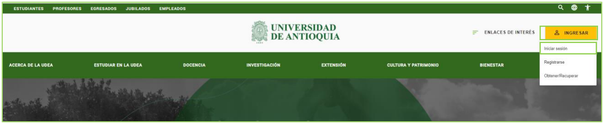
Figura 2 - Conectar al portal- Presione clic en la opción Enlaces de Interés seleccione Mis aplicaciones, así:
Enlaces de interés → Mis aplicaciones. (Ver figura 3).
 Figura 3 - Enlaces de interés
Figura 3 - Enlaces de interés
- Se abrirá una ventana con las aplicaciones de la Universidad; seleccione SIIU. (Ver figura 4).
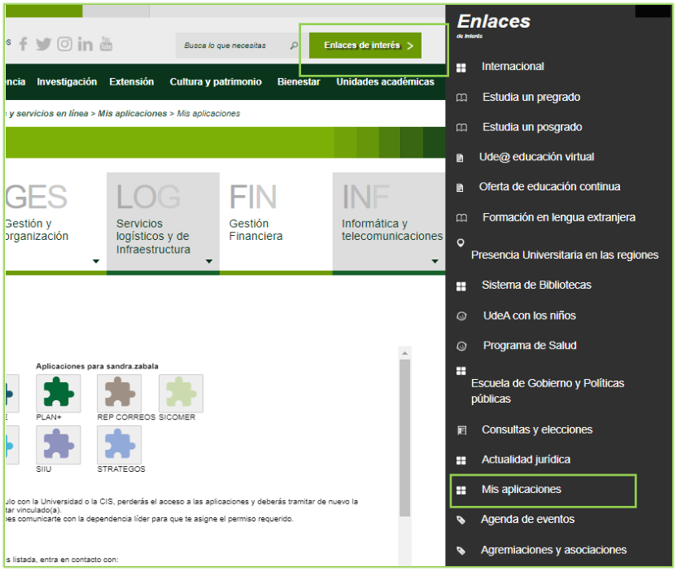
Figura 4 - Seleccione SIIU> Se abre una nueva ventana con la aplicación SIIU. Si la ventana no abre inmediatamente, es necesaria la configuración de ventanas emergentes en el navegador y seleccionar la opción que autorice el SIIU.
2.3.2. Conceptos de Solicitud vs. Novedad
Una vez se encuentre en SIIU ingrese por la opción: Trámites administrativos / Nueva solicitud o novedad. (Ver figura 5).
Distinción Institucional en SIIU
- Solicitud: Son los cambios que se pueden realizar a un proyecto en: Tiempo, presupuesto, participante o compromisos, el cual ha sido aprobado por su (co)financiador responsable interno, es decir, pertenece a la Universidad de Antioquia.
- Novedad: Son los cambios que se pueden realizar a un proyecto en: Tiempo, presupuesto, participante o compromisos, el cual ha sido aprobado por su (co)financiador responsable externo a la Universidad de Antioquia.
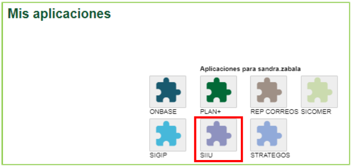
Figura 5 - Nueva solicitud o novedad2.3.3. Filtros de búsqueda y opciones de trámite
El sistema presenta un formulario para realizar el filtro de búsqueda con los siguientes campos:
| Campo | Detalle |
|---|---|
| Centro administrativo | Campo obligatorio; seleccione de la lista desplegable el centro al que pertenece el proyecto. |
| Nivel | Lista desplegable con las opciones: Macroproyecto, Subproyecto, Proyecto. |
| Clase de proyecto | Lista desplegable con las opciones: Proyecto, Proyecto asociado a macroproyecto. |
| Código de proyecto | Ingrese el código del proyecto. |
| Palabras Clave | Ingrese palabras clave del proyecto. |
| Tipo de Proyecto | Lista desplegable con las opciones: Investigación, Extensión, Posgrados. |
| NIT del financiador | Ingrese el NIT del financiador del proyecto. |
| Estado | Lista desplegable con los estados del proyecto (ej: En ejecución). |
| Botón Consultar | Presione una vez defina el criterio de búsqueda. |
| Botón Limpiar | Presione si desea borrar el criterio de búsqueda. |
En el filtro de búsqueda seleccione el centro de investigación, en el campo código del proyecto indique el código (o filtre por estado En ejecución), y presione Consultar. (Ver figuras 6 y 7).
 Figura 6 - Consulta por código del proyecto
Figura 6 - Consulta por código del proyecto
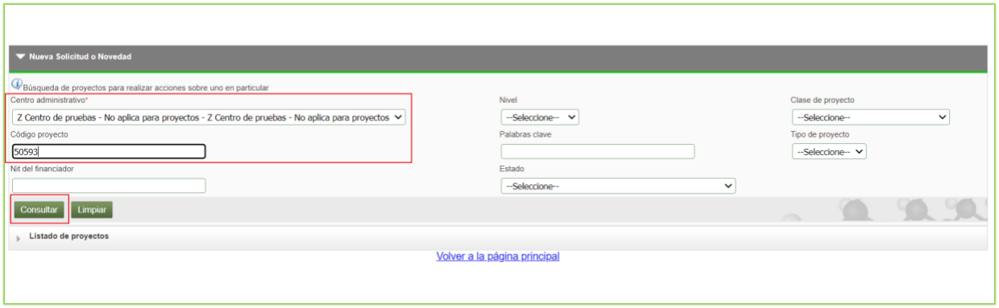
Figura 7 - Filtro de búsquedaEl sistema trae como resultado una tabla con las columnas: - Código Proyecto - Nivel - Proyecto vinculado - Convocatoria / Proceso de Selección - Responsable - IP o Coordinador - Tipo Proyecto - Estado - Acciones
La columna acciones presenta los siguientes iconos de acceso directo a la información del proyecto:
| Icono | Detalle |
|---|---|
| Ver participante | |
| Ver etapas | |
| Ver Detalle | |
| Ver compromisos |
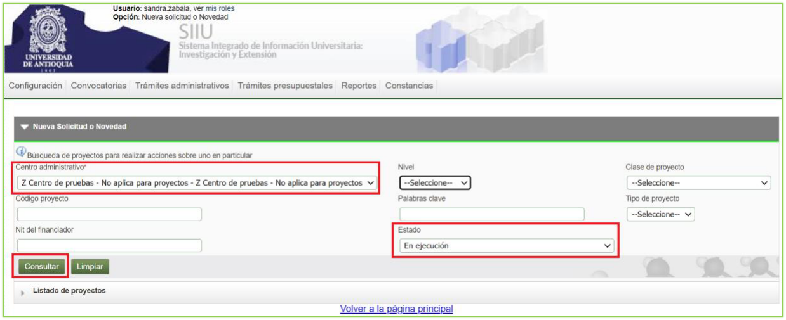
Figura 8 - Resultado de búsquedaSeleccione el proyecto al cual desea realizarle la solicitud. El sistema muestra la barra superior de solicitudes administrativas: (Ver figura 9).
| Solicitud | Detalle |
|---|---|
| Prórroga | Permite realizar prórroga a proyectos para iniciar o para postergar la fecha de finalización. |
| Cambio Rubro | Permite hacer cambios al valor de los rubros, crear subrubro. |
| Adición Presupuestal | Permite adicionar presupuesto al proyecto por parte del aportante. |
| Cancelación | Permite cancelar el proyecto (opción inhabilitada actualmente). |
| Cambio en Participante | Permite realizar cambio en los participantes del proyecto. |
| Suspensión | (Esta opción se encuentra inhabilitada). |
| Plazo para entrega de Compromisos | Permite solicitar plazo para entregar los compromisos. |
| Homologación de Compromisos | Permite cambiar los compromisos. |
| Historial de Solicitudes | Permite ver el histórico de las solicitudes de un proyecto. |
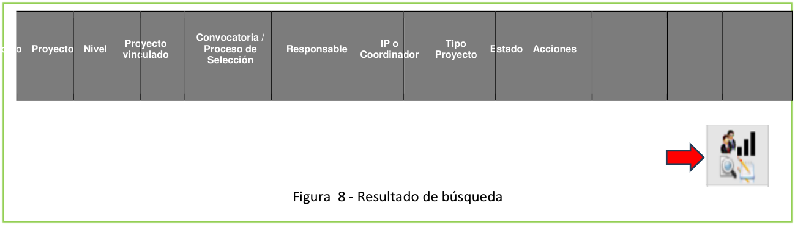
Figura 9 - Resultado de búsqueda por filtros definidos y barra de solicitudes2.4 Solicitud Cambio de Participante
La solicitud de cambio de participante puede realizarse en dos momentos institucionales:
1. Cuando el proyecto está en estado Aprobado: Permite cambiar los participantes del proyecto ANTES de que se realice el inicio formal.
2. Cuando el proyecto se encuentra en estado En Ejecución: Permite cambiar los participantes del proyecto después del inicio formal.
!!! info "> Cada vez que se solicite un cambio de participante en ejecución, el sistema genera una adenda, la cual es un documento que contiene los cambios en los participantes solicitados previamente. Este documento debe contener las firmas del Coordinador de grupo, Jefe de centro y el Investigador Principal o responsable del proyecto."
En la solicitud de cambio de participante se puede realizar: - Solo ingresar participante(s). - Solo retirar participante(s). - Retirar e ingresar participante(s). - Cambiar el %P&B (porcentaje participación y beneficio) de los participantes. - Cambiar las funciones del participante.
Seleccione el botón Cambio en Participante; el sistema despliega el nuevo formulario. (Ver figura 10).
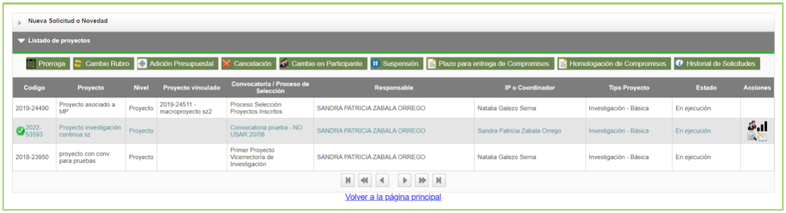
Figura 10 - Solicitud cambio de participante2.4.1 Retirar participante
- Si desea retirar un participante, selecciónelo marcando la casilla de verificación (cuadro) ubicada a la izquierda de su nombre.
- El sistema lo traslada a la tabla inferior Participantes a Retirar.
- Asigne el valor de
0al campo % PyB nuevo. (Ver figura 11).
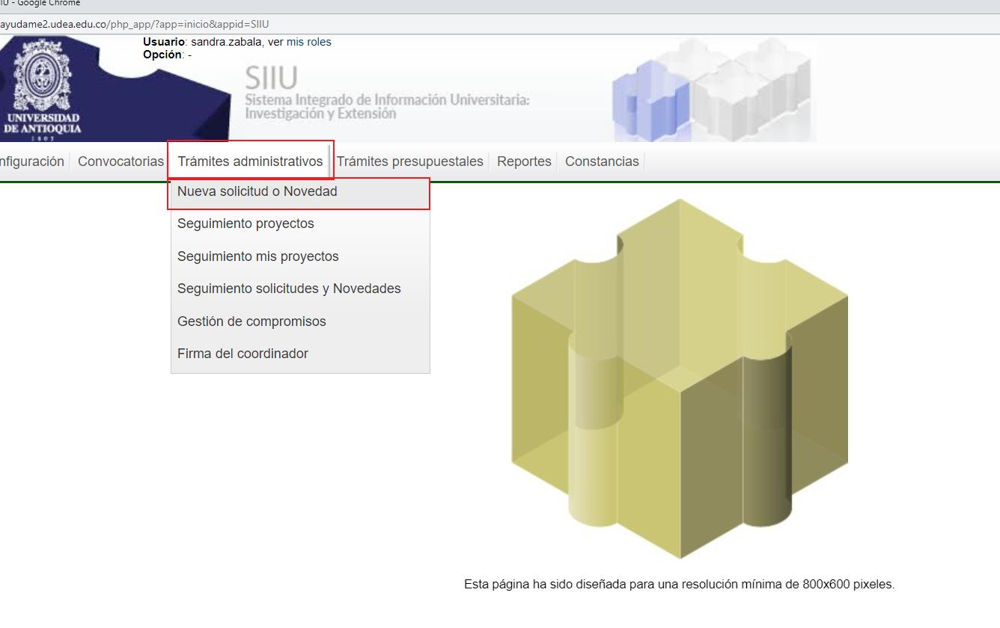
Figura 11 - Participante a retirar- Caso de solo retiro: El sistema permite realizar la solicitud de solo retiro del participante (sin reemplazo). En este caso no se selecciona Consultar persona. Ingrese la Justificación del retiro, presione Guardar y continúe con la solicitud hasta finalizar. (Ver figura 12).
- Caso de reemplazo: El sistema permite reemplazar al usuario saliente ingresando un nuevo participante desde el botón Consultar persona.
 Figura 12 - Retiro de participante
Figura 12 - Retiro de participante
2.4.2 Ingresar participante
Para ingresar un nuevo participante, presione el botón Consultar Persona.
> Se debe tener a mano la información real del o los participantes a ingresar ya que, una vez almacenado el registro, algunos campos no se podrán modificar.
- El sistema abre la ventana Consulta de personas:
- Ingrese el número en el campo Cédula, o
- Ingrese el nombre y apellido en el campo Nombre.
- Presione el botón Consultar. (Ver figuras 13 y 14).
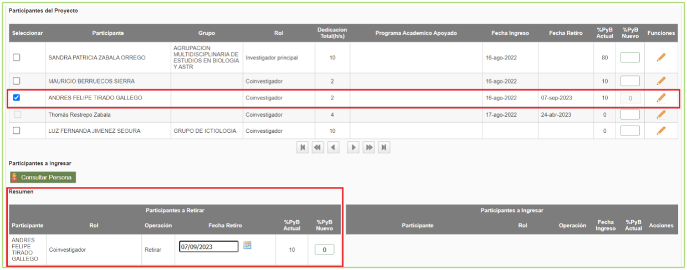
Figura 13 - Consulta x cédula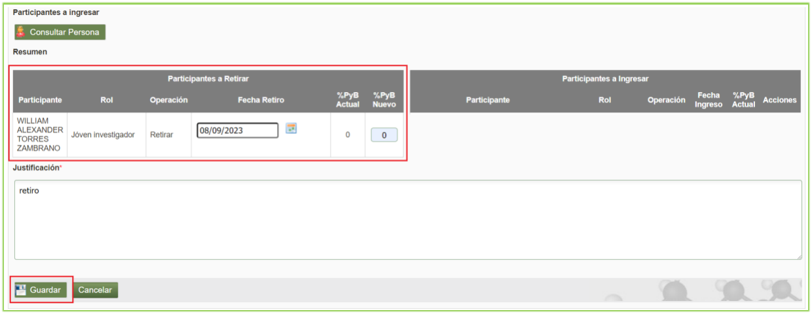
Figura 14 - Consulta x Nombre- Seleccione el participante presionando el ícono verde de visto bueno que aparece al lado derecho del nombre.
- El sistema abre el formulario de vinculación con los siguientes campos:
| Campos | Detalle |
|---|---|
| Participante | Este campo no es editable. |
| Teléfono | Este campo no es editable. |
| Correo | Este campo no es editable. |
| Grupo por el que participa | Este campo se puede editar y modificar. |
| Institución que representa | Seleccione la institución o elija Sin institución. |
| Rol en el proyecto | Seleccione de la lista desplegable el rol a desempeñar. |
| Dedicación por fuera del plan de trabajo (Personal externo) | |
| Horas por semana | Asigne número de horas, teniendo en cuenta los topes definidos desde talento humano. |
| Meses | Asigne número de meses; no debe superar la duración total del proyecto. |
| Dedicación dentro del plan de trabajo (Empleados, personal interno) | |
| Horas por semana | Asigne número de horas según topes de talento humano. |
| Meses | Asigne número de meses; no debe superar la duración total del proyecto. |
| Nota aclaratoria para el %PyB | Ingrese nota aclaratoria del % de participación y beneficios si lo requiere (aparecerá en documentos de respaldo; no obligatorio). |
| Función | Ingrese las funciones a desarrollar en el proyecto por parte del participante. |
| Observaciones | Ingrese observaciones si son requeridas. |
Figura 15 - Ingreso de participante
- Una vez ingresada la información, el sistema muestra en la pantalla principal la tabla Participantes a Ingresar con la operación
Ingresar. (Ver figura 16). - Se puede eliminar el participante ingresado presionando el icono
Xrojo. - Se puede editar la información presionando el icono lápiz.
Participante no registrado en el portal
Si el participante no se encuentra registrado, el sistema genera el mensaje "La consulta no trajo resultados". En este caso, el investigador principal o responsable debe radicar un ticket asignado a la Vicerrectoría de Investigación indicando: Tipo de documento, número de documento, Nombre completo, correo electrónico y teléfono.
Figura 16 - Participantes a ingresar
2.4.3 Cambio de %P&B (porcentaje participación y beneficio)
Para cambiar el %P&B de los participantes del proyecto: 1. Seleccione la columna %P&B Nuevo. 2. Diligencie los nuevos valores de %PyB para los participantes requeridos (si en la solicitud no cambia el %PyB, no es necesario diligenciar esta casilla). 3. Escriba la justificación detallada de las variaciones realizadas en el campo Justificación.
Regla del 100%
Valide que la sumatoria total de los porcentajes de PyB entre todos los participantes dé exactamente el 100%.
- Finalice presionando el botón Guardar. (Ver figura 17).
 Figura 17 - Cambio de% PyB
Figura 17 - Cambio de% PyB
2.4.4 Cambio de funciones del participante
Para cambiar las funciones de los participantes del proyecto: 1. Ubique al participante requerido en la lista. 2. En la columna Funciones, presione el icono del lápiz. 3. El sistema presenta una ventana emergente que muestra las Funciones Anteriores y un campo para ingresar las Funciones Nuevas. 4. Ingrese los ajustes correspondientes y presione Confirmar para terminar. (Ver figura 18).
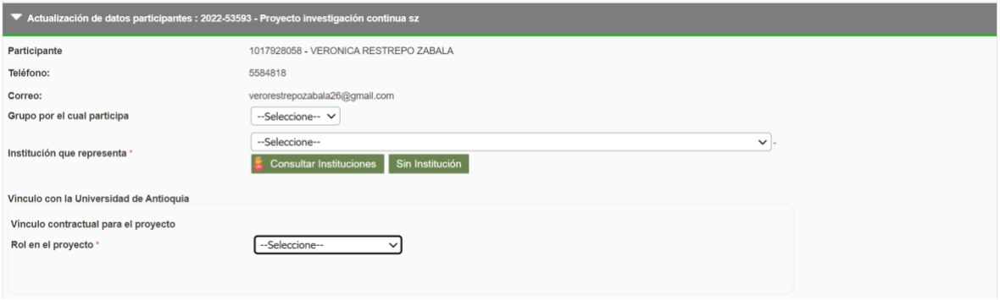
Figura 18 - Cambiar funciones del participante2.4.5 Pestaña Condiciones formales y generación de respaldo
En la pestaña Condiciones Formales se validan las condiciones previas del trámite y se genera el documento de respaldo de firmas:
- Presione el botón Generar Respaldo (este paso es obligatorio para poder enviar la solicitud al centro).
- El sistema genera una ventana para aceptar los términos y condiciones:
- Marque con un check la casilla: "He leído y aceptado los términos y condiciones de este documento".
- Presione el botón Confirmar. (Ver figura 19).
Firma electrónica del Investigador Principal
En el momento en que el Investigador Principal o responsable del proyecto acepta los términos y condiciones en la plataforma, no se requiere su firma física manual en el documento de respaldo generado, puesto que el sistema estampa automáticamente su firma electrónica institucional.
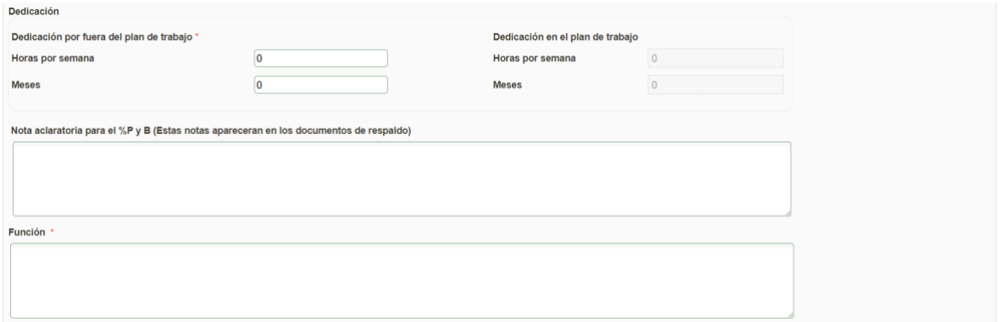
Figura 19 - Términos y condiciones- El sistema genera y descarga un archivo PDF con la información completa del cambio de participante (operaciones de retiro, ingreso, cambio de dedicación, P&B y funciones). Este archivo constituye el Documento de Respaldo de Solicitud de Cambio de Participante. (Ver figuras 20 y 21).
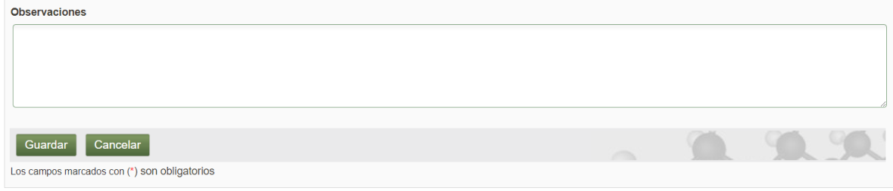
Figura 20 - Documento respaldoFigura 21 - Firmas documento de respaldo
Recolección de firmas y radicación
- Si no es posible conseguir las firmas físicas de los demás participantes de forma inmediata, guarde la solicitud.
- Una vez tenga el documento de respaldo completamente firmado por los participantes de la Universidad de Antioquia, ingrese nuevamente al SIIU en
Trámites Administrativos / Seguimiento solicitudes y Novedades.- Adjunte el PDF escaneado en la pestaña Adjuntar Documento como documento soporte.
- Finalmente, proceda a enviar la solicitud al Centro de Investigación para su respectivo aval.
3. Nota de cambio
- No aplica para la primera versión.
Registro de Control y Firmas
| Rol | Nombre | Cargo / Dependencia | Fecha |
|---|---|---|---|
| Elaboró | Sandra Patricia Zabala Orrego | Contratista, Vicerrectoría Investigación | 16-FEB-2024 |
| Revisó | Kerlin Yohana Bedoya Agudelo | Analista de Procesos, División de Arquitectura de Procesos | 29-ABR-2024 |
| Aprobó | Gloria Valencia Bustamante | Asistente, Vicerrectoría de Investigación | 29-ABR-2024 |